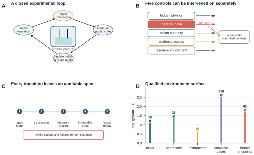
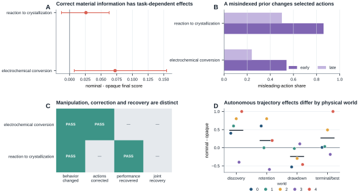
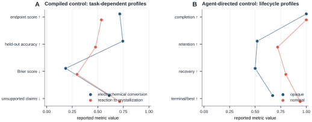
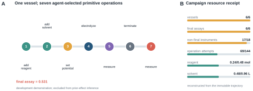
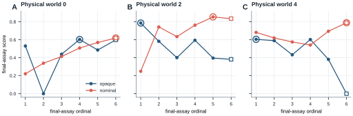
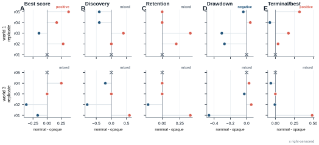

1. Introduction
Scientific agents are increasingly asked to propose experiments, interpret measurements, and operate automated laboratories. Their evaluation, however, usually compresses experimental work into a prediction or a vector-valued query. Even when an agent produces a high-scoring condition, the observed endpoint does not reveal whether the condition was discovered by chance, whether the agent used intermediate evidence, whether it retained the resulting strategy, or whether it could recover after abandoning it.
Real laboratories provide indispensable evidence about physical execution and deployment. They are less suited to repeatedly cloning a hidden physical system, changing only the information supplied to the agent, matching the observation stream, and sampling many independent decision trajectories. Static optimization benchmarks provide scale and clean objective functions but remove the stateful experimental process whose scientific use is at issue. These two settings therefore leave a methodological gap: a controlled apparatus for studying the behavior of the experimenting agent.
ChemWorld fills this gap with executable, task-bounded chemical and chemical- engineering worlds. An experiment is a state-changing sequence of operations and measurements. The agent controls additions, process conditions, measurements, termination, and final assay under a campaign-wide resource endowment. Invalid operations and failures are retained rather than repaired into valid actions. Hidden evaluator state is separated from the public agent view, while world, source, observation, resource, and trajectory identities are cryptographically bound for audit and replay.
We use ChemWorld to study experimental intelligence: the structured response of an agent to interventions, observations, and experimental consequences. Our experiments intervene on prior material information, physical world identity, and experimental control authority. We measure lifecycle autonomy, discovery, retention, drawdown, recovery, predictive calibration, and resource use rather than collapsing them into a single leaderboard score.
The study makes five contributions. First, it provides an executable chemical- world substrate spanning stateful operations, instruments, failures, resources, and replay. Second, it introduces an agent-directed primitive-control interface in which measurement and lifecycle decisions remain with the agent. Third, it formalizes trajectory-level measures of experimental behavior. Fourth, it shows that task performance, prior response, prediction, and recovery need not agree. Fifth, it uses fresh trajectories within fixed physical worlds to test whether observed experimental phenotypes are repeatable or dominated by one-off model sampling.
2. Relation to existing systems
Chemistry agents and self-driving laboratories have established that language- model systems can retrieve chemical knowledge, call specialist tools, compile protocols, and act through cloud or robotic laboratories. Coscientist connected planning, documentation search, code, and experimental automation, while ChemCrow combined a language model with eighteen chemistry tools and physical synthesis. A-Lab and mobile robotic laboratories provide stronger evidence than ChemWorld for real chemical execution and deployment. AutoLabs adds a systematic twenty-configuration evaluation of natural-language-to-liquid-handler protocol generation, whereas RoboChem-Flex demonstrates affordable, modular closed-loop Bayesian reaction optimization across six real chemical case studies. ACRA translates literature procedures into hardware-checked XDL and executes them on two robotic platforms; PRISM connects agent-generated protocols, digital-twin validation, and coordinated multi-instrument execution. These systems answer whether agents, protocols, and optimizers can be connected to, and produce useful outcomes in, the real laboratory (Boiko et al., 2023; Bran et al., 2024; Szymanski et al., 2023; Dai et al., 2024; Panapitiya et al., 2026; Pilon et al., 2026; Pagel et al., 2026; Hsu et al., 2026).
Hypothesis-centred systems provide another important, but distinct, comparison. Co-Scientist uses a multi-agent tournament to generate and refine biomedical hypotheses that were subsequently tested with expert oversight. Robin closes the intellectual loop from literature-derived hypotheses to autonomous analysis of newly generated biological data, while scientists execute human-authored laboratory protocols and return the results. These systems are stronger than ChemWorld on literature-scale synthesis, biomedical novelty, and empirical wet-laboratory validation. They do not give the agent primitive control of the sample lifecycle, nor are they designed to estimate behavioral effects under cloned physical and informational conditions (Gottweis et al., 2026; Ghareeb et al., 2026).
Long-horizon and strategy-level claims also have strong physical precedents. ORGANA plans with visual feedback and executes diverse chemistry procedures, including a parallel nineteen-step electrochemical workflow. ChemAgents spans six task types and transfers to a seventh robotic organic-chemistry setting. Most directly, A-Lab GPSS reports a 352-sample air-sensitive solid-state campaign and distinguishes abductive local interrogation from inductive search expansion in its agents' proposal traces. This evidence is stronger than ours on real chemical discovery and campaign duration, and it means that observing different experimental strategies is not itself novel. ChemWorld's additional question is whether such strategy phenotypes survive paired information interventions and fresh trajectories in a fixed physical identity (Darvish et al., 2025; Song et al., 2025; Fei et al., 2026).
Recent instrument agents also preclude treating autonomous stepwise operation as unique. Agents have orchestrated an X-ray nanoprobe and a robotic materials station while retaining instructions from human feedback. An agentic X-ray scientist went further: it selected commands from observations in a virtual beamline and transferred the workflow to a real synchrotron, with commands relayed unmodified by a human for safety. These studies are stronger on instrument fidelity, multimodal perception, deployment, and adaptation to real anomalies. Their principal estimand is task and operational success in a specific facility, rather than the effect of randomized information conditions on replicated experimental trajectories. AgentChemist likewise uses visual chemical perception to adjust robotic dispensing during a real titration, which means that state-responsive physical operation is not an exclusive ChemWorld capability (Vriza et al., 2026; Chen et al., 2026; Wei et al., 2026).
Virtual environments address complementary constraints. Summit and Olympus already support reproducible in-silico reaction optimization, PC-Gym supports nonlinear chemical-process control, and ChemGymRL provides interconnected virtual chemistry benches with fine-grained agent actions. MADE now provides a modular, budget-constrained benchmark for closed-loop materials discovery in which pipelines propose crystal candidates and receive formation-energy-oracle feedback. LLEMA separately combines LLM candidate generation, chemical rules, memory, surrogate prediction, and evolutionary search across fourteen multi-objective materials tasks. These systems are stronger than ChemWorld in systematic algorithmic comparison, candidate generation, and materials-design breadth. We therefore do not claim the first virtual chemistry laboratory, budgeted closed loop, agentic materials-discovery environment, or memory-guided materials search, and do not use optimizer ranking as the primary novelty. ChemWorld uses a different unit of action: an agent constructs and advances each physical experiment through additions, control, characterization, termination, and final assay, with campaign-wide material, instrument, vessel, failure, and provider accounts. This runtime is then used for paired interventions on the experimenting agent and state-level replay (Felton et al., 2021; Häse et al., 2021; Beeler et al., 2024; Bloor et al., 2024; Malik et al., 2026; Abhyankar et al., 2026).
Interactive discovery benchmarks already test hypothesis formation, experimentation, and explanation. DiscoveryWorld supplies long-horizon fictional scientific tasks; BoxingGym evaluates experimental design and model discovery in generative probabilistic environments; and SciGym supplies a dry laboratory of hundreds of systems-biology models. SciExplorer goes further by letting an agent select numerical experiments and analysis procedures for initially unknown mechanical, wave, and quantum systems, recovering equations of motion and Hamiltonians without task-specific exploration blueprints. More recent benchmarks formalize this law-recovery problem at scale. NewtonBench contains 324 counterfactual physics-law tasks, DiscoverPhysics evaluates prediction and explanation in 22 non-canonical physical worlds, and ActiveSciBench-Chem contains 57 enzyme- kinetics mechanism tasks. These systems currently exceed ChemWorld in the generality, scale, and formal evaluation of law recovery. ChemWorld addresses a different unit of interaction: the agent must construct and advance a stateful chemical experiment, decide when to characterize it, and bear inventory and vessel opportunity costs rather than only select the next query or initial condition (Jansen et al., 2024; Gandhi et al., 2025; Duan et al., 2025; Nägele and Marquardt, 2026; Zheng et al., 2025; Wiemann et al., 2026; Kabra et al., 2026).
HExA and its Interphyre benchmark create a particularly important boundary for the phrase learning through experimentation: agents actively intervene in a procedural-physics environment, test hypotheses, acquire composable skills, and transfer them to harder tasks. ChemWorld does not claim to originate active experimental learning or reusable experimental skills. Its complementary unit is a chemistry-native sample lifecycle with characterization choices, entity resources, failure consequences, paired prior interventions, and fixed-world fresh-trajectory replication (Chandra et al., 2026).
Static procedural and realistic workflow benchmarks cover still different competencies. ChemReason-Bench supplies 7,306 human-validated tasks for ordering, validating, completing, and rationalizing experimental procedures. ScienceBoard and SciAgentArena evaluate agents in professional scientific software and about two hundred real research scenarios, respectively, with state- or step-level verification. They are stronger on task breadth, procedural validation, software realism, and multi-domain workflows. They generally evaluate whether an agent can execute or reason about a specified workflow, whereas ChemWorld asks how an agent produces evidence by altering a hidden chemical process and whether the resulting behavior survives controlled replication (Zhang et al., 2026; Sun et al., 2026; Liu et al., 2026).
Prediction--understanding dissociation and process-level evaluation are also not unique claims. CausaLab separates task success from recovered causal structure, and ReplaySCM evaluates executable mechanism replay. More broadly, the AI-agent-behavioral-science literature explicitly advocates systematic observation and interventions on situated agents. EurekAgent separately argues that permissions, artifacts, budgets, and human interfaces should be treated as an engineered agent environment, although its demonstrations are metric-driven mathematics, kernel, and machine-learning tasks rather than physical experiments. ChemWorld therefore does not claim the general concept of environment engineering. Most directly for scientific agents, Corral reports across more than 25,000 runs that successful outcomes can conceal evidence neglect and failures of belief revision. A July 2026 robotic- chemistry stress test likewise makes physical executability and evidence-driven replanning measurable. ChemWorld therefore does not claim to invent behavioral evaluation. It instantiates that lens as a chemistry-grounded apparatus in which actions, measurements, resources, and subsequent physical consequences are observable, while prior information can be paired and fresh trajectories can be replicated within the same physical world. AHOIS is another important boundary: on a real optical platform it proposes and tests physical hypotheses, diagnoses failure modes, and ablates a Socratic critic. It is stronger on hypothesis-level epistemic autonomy and real discovery; ChemWorld is stronger only on the present study's identity control, resource provenance, and trajectory replication (Yang et al., 2026; Batzoglou, 2026; Chen et al., 2026; Xin et al., 2026; Ríos-García et al., 2026; Guo et al., 2026; Zeng et al., 2026).
Qiushi Discovery Engine sets an even stronger boundary for claims about end-to-end autonomy and long-horizon research. On a real optical platform it maintained a nonlinear research trajectory over thousands of model and tool calls and reported experimental validation of a previously unreported physical mechanism. ChemWorld therefore does not claim the first long-horizon autonomous research trajectory, end-to-end discovery, or agent-generated mechanism. Its empirical contribution is the complementary ability to repeat controlled interventions on an experimenting agent within an identity-bound chemical substrate and to quantify whether its strategy survives fresh sampling (Yang et al., 2026).
Finally, LabUtopia, MATTERIX, and Labimus provide substantially richer perception, manipulation, laboratory geometry, powder physics, and sim-to-real capabilities, while LabOSBench and LabRobFail isolate instrument-control and robotic-failure competencies. The ADePT framework appropriately evaluates this robotic-autonomy axis through adaptability, dexterity, perception, and task complexity. ChemWorld intentionally abstracts those problems---especially dexterity and perception. Its niche is not a more realistic robot simulator, but controlled experiments on the behavior of experimenting agents, grounded in executable chemistry (Li et al., 2025; Darvish et al., 2026; Wu et al., 2026; Zou et al., 2026; Wang et al., 2026; Salazar-Villacis and Benyahia, 2026).
3. ChemWorld as an apparatus for studying agents
3.1 Stateful chemical worlds
ChemWorld separates a physical causal substrate, an experimental interaction runtime, and a versioned task/evaluation contract. The substrate contains typed material, phase, vessel, equipment, thermal, and process states. Operations route through task-allowed domain services and update these states atomically. The task contract determines the public objective, allowed operations and instruments, observation mask, budget, scoring law, and termination semantics.
The present release registers 15 tasks, 28 operation types, five instrument types, and 37 public scalar observation keys. All registered complete- experiment adapters pass 415 midpoint, coordinate-boundary, and categorical execution cases. Sixty-two declared success metrics bind to explicit evaluator endpoints. These are environment-design qualifications; formal agent results in this manuscript are limited to electrochemical conversion and reaction-to- crystallization, with autonomous primitive-control results currently limited to electrochemical conversion (Fig. 1 and Table 1).
3.2 Agent-directed experimentation
In agent-directed control, each decision selects exactly one typed operation. The environment validates the operation, preflights the resource ledger, commits or rejects the state transition, and returns only public outcomes. The agent may then select a new operation or request an allowed measurement. An experiment is not complete when the process is merely terminated: the agent must also request a final assay. A valid final assay closes the vessel and, in campaign mode, makes a fresh vessel available in the same hidden world.
The official runner performs no automatic action repair, termination, or final assay. Invalid and resource-rejected proposals consume their declared operation attempt and remain in the trajectory. Material, solvent, vessel, instrument, operation, model-call, token, and wall-time resources are recorded on separate axes rather than combined into a hidden scalar budget.
3.3 Controlled identities and replay
Each run binds the task and scoring contracts, physical world and material instance, observation-noise namespace, resource card, method envelope, model configuration, source tree, and agent-local seed. Primitive transitions can be replayed from the durable trajectory, and resource receipts can be reconstructed from the same operations. Provider-session receipts remain separate from physical-transition replay.
This design makes it possible to hold a chemical world fixed while changing the information given to the agent, and to distinguish physical-world identity from a fresh model trajectory. Native Codex does not expose a reproducible provider sampling seed; a fresh trajectory is therefore an independent session-level realization, not a deterministically replayed model random-number stream.

A, Closed-loop interaction between a hidden chemical world, one typed agent action, the resulting state transition and a public measurement. B, Physical world, prior information, agent authority, evidence access and resources are independently controlled experimental axes. C, The auditable transition spine binds typed state, atomic transaction, resource receipt, immutable trace and exact replay; invalid actions and failures remain evidence. D, Qualified release surface. Counts establish declared reachability and evaluator binding, not agent performance across all registered tasks.
Table 1 | Qualified environment surface and formal evidence scope
| Quantity | Count | Evidence level |
|---|---|---|
| registered task designs | 15 | release surface |
| typed operation types | 28 | release surface |
| instrument types | 5 | release surface |
| deterministic complete-experiment cases | 415 | design qualification |
| declared endpoints bound to evaluators | 62 | design qualification |
| tasks with formal compiled-agent results | 2 | paper evidence |
| tasks with autonomous-agent results | 1 | paper evidence |
Counts for the environment surface are design qualifications, not claims of agent competence. Formal paper evidence covers fewer tasks than the registered surface.
4. Compiled experiments reveal task- and prior-dependent behavior
Compiled-experiment control is used here as a low-agency calibration, not as the ontological starting point of ChemWorld. On each exploration turn the agent selects a complete experiment and a compiler executes the task-defined procedure. This interface supports direct calibration against Latin hypercube, Gaussian-process, random-forest, and related typed optimization methods.
The nonduplicated active corpus contains 27,300 classic-baseline physical experiments and 2,280 participant experiments across opaque, nominal, and misindexed material-information conditions. The opaque participant slice is shared between the original two-task study and the three-arm study and is counted only once.
4.1 Optimization performance depends on the chemical task
In electrochemical conversion, the participant mean was 0.7150, compared with 0.6159 for the strongest information-matched structured RF-EI baseline. The paired descriptive difference was +0.0991 with a world-bootstrap 95% interval of +0.0103 to +0.1748. The strongest privileged-descriptor calibration scored 0.6441, and its comparison interval crossed zero.
In reaction-to-crystallization, the participant mean was 0.5355 and the best classic method, LHS, scored 0.5708. The paired difference was -0.0353 with a 95% interval of -0.0650 to -0.0085. These comparisons were not preregistered as superiority tests and do not support a general language-model-versus-classic- optimization ranking. They instead establish task-dependent behavior under a shared participant scaffold.
4.2 Correct material information has task-dependent value
Anonymous nominal material properties increased the electrochemical mean from 0.7150 to 0.7874, a paired difference of +0.0724 with a familywise 97.5% interval of +0.0074 to +0.1546. The crystallization mean increased from 0.5355 to 0.5615, but its interval of -0.0130 to +0.0630 included zero. Correct material information therefore had clear value in the sampled electrochemical worlds but uncertain value in crystallization.
4.3 Prior manipulation, action correction, and recovery are distinct
Deliberately misindexed material properties increased the first misleading- action rate from zero to 0.7 in electrochemistry and to 1.0 in crystallization. Electrochemical misleading-action share declined later in the campaign, but performance did not recover to the opaque condition. Crystallization recovered in endpoint performance but did not satisfy the differential action-correction criterion. Neither task passed the preregistered joint recovery rule.
The result does not show that agents generally recover from incorrect priors. It shows that prior manipulation, later behavioral change, and performance recovery are empirically separable events (Fig. 4A--C and Table 2).

A, Paired nominal-minus-opaque effects on compiled-experiment final score with familywise 97.5% world-bootstrap intervals. B, Early and late shares of actions aligned with deliberately misindexed material information. C, Separate preregistered checks for manipulation, differential action correction, performance restoration and their joint recovery rule. D, Nominal-minus-opaque autonomous development effects across five physical worlds; points are worlds and horizontal bars are descriptive means. Positive drawdown differences indicate larger drawdown under nominal information.
Table 2 | Compiled-experiment capability profiles
| Task | Information arm | Worlds | Final score | Held-out accuracy | Brier | Structure F1 | Mechanism F1 | Unsupported claims |
|---|---|---|---|---|---|---|---|---|
| electrochemical-conversion | opaque | 10 | 0.715 | 0.744 | 0.186 | 0.389 | 0.190 | 0.611 |
| electrochemical-conversion | nominal | 10 | 0.787 | 0.778 | 0.149 | not measured | not measured | not measured |
| electrochemical-conversion | misindexed | 10 | 0.685 | 0.711 | 0.209 | not measured | not measured | not measured |
| reaction-to-crystallization | opaque | 10 | 0.535 | 0.478 | 0.298 | 0.275 | 0.144 | 0.714 |
| reaction-to-crystallization | nominal | 10 | 0.562 | 0.433 | 0.316 | not measured | not measured | not measured |
| reaction-to-crystallization | misindexed | 10 | 0.584 | 0.433 | 0.316 | not measured | not measured | not measured |
Scores are means across ten physical worlds. Dashes indicate endpoints that were not defined for that information arm; they are not zeroes. No composite score is formed.
5. Optimization and cognition provide different capability profiles
The electrochemical participant combined a final recommendation score of 0.7150 with held-out directional accuracy of 0.744 and a Brier score of 0.186. Crystallization scored 0.5355 with held-out accuracy of 0.478 and Brier score of 0.298, despite higher declared directional accuracy. Structural-edge and mechanism-tag F1 scores were low in both tasks, and unsupported-claim rates were 0.611 and 0.714. All final recommendations reproduced tested conditions and produced no gain over the validated incumbent in any of the twenty task-world cells.
These measurements do not establish a general psychology of language models. They demonstrate why endpoint optimization, outcome-held-out prediction, declared confidence, structural explanation, and method synthesis must remain separate endpoints when evaluating scientific agents (Fig. 6A and Table 2).

A, Compiled-experiment endpoint score, held-out directional accuracy, Brier score and unsupported-claim rate for the opaque participant in two chemical tasks. B, Autonomous completion, retention, recovery and terminal-to-best summaries by information arm. Metric directions differ and no composite score is computed; the panel demonstrates the need to retain a capability profile rather than rank systems on these bars.
6. Autonomous experimentation exposes discovery, loss, and recovery
6.1 Native Codex closes complete experimental lifecycles
The autonomous development matrix placed native Codex (gpt-5.6-sol, medium
reasoning) in five paired electrochemical worlds under opaque or anonymous
nominal material information. Each cell received a campaign-wide endowment of
six vessels, six final assays, eighteen nonfinal instrument uses, 0.48 mol of
reagent, 0.96 L of solvent, and a nonbinding 144-attempt safety ceiling.
All ten cells and all sixty vessels completed. The agent submitted 815 primitive operations, including 164 nonfinal instrument measurements and sixty final assays (224 measurement operations in total), with no invalid or resource- rejected operation. All sixty provider sessions completed, and all resource, replay, and physical-pair audits passed. Figure 2 follows one complete vessel from primitive actions to its reconstructable campaign receipt.
6.2 Endpoint summaries conceal different learning trajectories
The opaque and nominal arms had mean best scores of 0.6314 and 0.7093, but the direction and magnitude varied strongly by world. Different time and resource estimands also disagreed: nominal-minus-opaque was negative for mean batch AUC and realized-attempt AUC but positive for fixed-144-operation AUC.
Individual campaigns revealed more substantial differences. One opaque agent found a score of 0.7865 in its first experiment and ended at 0.3824, whereas its nominal counterpart rose from 0.2492 to a best of 0.8544 and ended at 0.8352. Another opaque campaign ended at zero after previously scoring 0.6050, while the matched nominal campaign recovered from several declines and ended at 0.7894. Similar endpoint summaries can therefore obscure early discovery, catastrophic loss, stable retention, and late recovery (Fig. 3).
6.3 Material information is associated with trajectory stability, not a uniform performance gain
The global best appeared at mean normalized progress 0.32 in the opaque arm and 0.80 in the nominal arm. Online incumbent retention was 0.52 and 0.72; maximum absolute drawdown was 0.3326 and 0.0915; terminal-to-global-best ratio was 0.67 and 0.94. Three of six opaque loss episodes and four of five nominal episodes recovered. Diagnostic-aligned control changes were followed by a positive next-batch score change in 4/14 opaque and 8/17 nominal batches.
These are descriptive development results. In one selected world, retention, drawdown, and terminal-to-best effects reversed. The apparent average stability of the nominal arm may therefore reflect physical-world context, a single provider trajectory, or their interaction (Fig. 4D, Fig. 6B and Table 3).

A, The first vessel from the opaque world-0 development campaign: the agent selected reagent and solvent addition, potential setting, electrolysis, a UV-visible measurement, termination and final assay in seven primitive operations. This example illustrates the interface and is excluded from prior-effect inference. B, Independently debited campaign resources reconstructed from the immutable trajectory; physical inventory and instrument use are not collapsed into a scalar token budget.

Final-assay sequences for opaque and anonymous nominal-information agents in development worlds 0, 2 and 4. Open circles identify the first campaign maximum. The examples expose early discovery followed by abandonment, gradual improvement, drawdown and terminal recovery that a best-score endpoint alone cannot distinguish.
Table 3 | Autonomous development trajectories (G2 v0.4)
| Arm | Cells | Completion | Operations | Best score | Batch AUC | Realized-op AUC | Fixed-budget AUC | Discovery fraction | Retention | Max drawdown | Terminal / best | Recovery |
|---|---|---|---|---|---|---|---|---|---|---|---|---|
| opaque | 5 | 1.000 | 82.600 | 0.631 | 0.617 | 0.520 | 0.563 | 0.320 | 0.520 | 0.333 | 0.671 | 0.500 |
| nominal | 5 | 1.000 | 80.400 | 0.709 | 0.589 | 0.501 | 0.591 | 0.800 | 0.720 | 0.092 | 0.941 | 0.800 |
Each arm contains five physical-world cells and six completed vessels per cell. Operations are mean submitted primitive attempts per cell. These development data select the worlds and endpoints for G2 v0.5 and are excluded from its replication estimand.
7. Fresh trajectories test within-world repeatability
We selected two physical worlds only after the development study because their nominal-minus-opaque trajectory patterns opposed one another. The development trajectories are excluded from the replication estimand. In each world, five fresh trajectory replicates pair opaque and nominal information, producing ten pair blocks and twenty cells. Pair order and arm-first order are frozen and balanced.
Eighteen cells completed and two were right-censored, leaving eight complete pairs: four in each world. The two right-censored cells were the nominal arm of world 1 replicate r01 and the opaque arm of world 3 replicate r05. Each ended after a provider-infrastructure failure with three vessel starts, two completed final assays, one started but incomplete vessel, and three unstarted vessel opportunities. No cell was replaced. Across the matrix, agents started 114 vessels and completed 112 final assays; six of the 120 pre-specified vessel opportunities were never started because of censoring. Attempt selection, within-pair physical identity, terminal resource reconstruction, and exact physical replay all passed the fail-closed audit.
Fresh trajectories did not reproduce a stable opposing-world pattern (Fig. 5 and Table 4). In world 1, the median nominal-minus-opaque difference was +0.228 for best score and +0.224 for mean final-assay score; both were positive in three of four complete pairs. Among the four core lifecycle endpoints, however, discovery fraction (median -0.200) and retention (median +0.100) were mixed. Drawdown was smaller under nominal information in three of four pairs (median difference -0.156), and terminal-to-best ratio was higher in three of four pairs (median +0.104).
In world 3, mean final-assay score was lower under nominal information in three of four pairs (median -0.065), but best score reversed sign evenly across pairs (median -0.083; two positive and two negative). Every core lifecycle endpoint was mixed: median differences were -0.100 for discovery fraction, 0.000 for retention, +0.001 for drawdown, and -0.003 for terminal-to-best ratio. Across both worlds, six of eight world-by-core-lifecycle classifications were mixed, and no core lifecycle metric showed directionally consistent opposite signs in the two worlds.
The frozen interpretation policy therefore selected
frequent_within_world_reversal. The qualitative mapping was added while 9
cells were complete, 1 was right-censored, and 10 were pending, before terminal
scores, trajectory contents, or paired effects were inspected; it is an
outcome-blind supplement, not a claim of preregistration before execution. Its
frozen sentence attributes the observed instability to
"provider-trajectory variability." Because native Codex provider sampling was
not seed-controlled and provider conditions were not experimentally varied, we
use that phrase descriptively: the data establish frequent reversal across
fresh agent trajectories, not a causal provider effect.
The main result is therefore not that material information is beneficial or harmful. It is that an endpoint effect can look directional while the experimental lifecycle producing it is not reproducible. Prior response is not a scalar property of the model or physical world; it is expressed through an interaction between information, physical context, and a sampled experimental trajectory. The selected two-world design characterizes this instability but does not estimate its frequency in a population of chemical worlds.

Nominal-minus-opaque paired differences for best score and four core lifecycle
endpoints---global-best discovery fraction, online incumbent retention, maximum absolute
drawdown and terminal-to-best ratio---across five fresh replicates in each
of selected physical worlds 1 and 3. All ten pre-specified trajectory pairs are shown; an x marks a right-censored pair. Six of eight world-by-core-lifecycle classifications were mixed, selecting the frozen frequent_within_world_reversal interpretation branch.
Selection used the prior development matrix; those trajectories are excluded. Effects are
reported within world, with no pooled population-level test.
Table 4 | Fresh-trajectory replication (G2 v0.5)
| World | Replicate | Opaque state | Nominal state | Δ best score | Δ mean score | Δ discovery | Δ retention | Δ drawdown | Δ terminal / best |
|---|---|---|---|---|---|---|---|---|---|
| 1 | r01 | completed | right_censored | not measured | not measured | not measured | not measured | not measured | not measured |
| 1 | r02 | completed | completed | 0.285 | 0.304 | 0.000 | 0.200 | -0.273 | 0.035 |
| 1 | r03 | completed | completed | -0.143 | -0.074 | 0.400 | 0.400 | -0.306 | 0.173 |
| 1 | r04 | completed | completed | 0.170 | 0.144 | -0.400 | 0.000 | 0.045 | -0.073 |
| 1 | r05 | completed | completed | 0.381 | 0.429 | -0.400 | 0.000 | -0.040 | 0.319 |
| 3 | r01 | completed | completed | -0.167 | -0.121 | 0.600 | 0.400 | -0.463 | 0.486 |
| 3 | r02 | completed | completed | -0.368 | -0.236 | -0.800 | -0.200 | 0.057 | -0.007 |
| 3 | r03 | completed | completed | 0.001 | -0.009 | 0.000 | 0.000 | -0.028 | 0.000 |
| 3 | r04 | completed | completed | 0.253 | 0.291 | -0.200 | 0.000 | 0.030 | -0.060 |
| 3 | r05 | right_censored | completed | not measured | not measured | not measured | not measured | not measured | not measured |
Deltas are nominal minus opaque within the same physical world and replicate block.
The two deliberately selected worlds are not pooled into a population-level estimate.
Terminal coverage: 18 completed cells, 2 right-censored cells, and 8 complete pairs (4 in world 1; 4 in world 3).
The frozen interpretation mapping selected frequent_within_world_reversal: 6 of 8 world-by-core-lifecycle classifications were mixed. Policy SHA-256: 93604ce8af7211f35c5d3b896609addef6d436f3248f45aba3cc04a11da9d67e.
Frozen policy language: Fresh trajectories frequently reversed sign within a fixed physical world, indicating that provider-trajectory variability dominated any stable material-information pattern.
Provider sampling was not seed-controlled; this language is descriptive and does not identify a causal provider effect.
8. Discussion
ChemWorld changes what can be measured about a scientific agent. A high endpoint can result from early luck followed by abandonment, while slower improvement can produce a more stable terminal policy. Correct prior information can alter actions without uniformly improving outcomes. Later action correction need not imply cognitive correction or performance recovery. These distinctions are invisible when an experiment is represented only as an input vector and final score.
The environment is complementary to physical laboratory automation. It does not test robot manipulation, real instrument integration, or sim-to-real transfer. Instead, it enables repeated, identity-controlled experiments on agent behavior that would be difficult or costly to isolate in a single real chemical system. Physical deployment and controlled behavioral evaluation address different parts of the scientific-agent problem.
The present work also has important limits. ChemWorld contains a bounded set of physical and constitutive models rather than arbitrary chemistry. Its spectra and assays are synthetic state-coupled instruments, not empirical spectral predictors. Formal compiled-experiment results cover two tasks; autonomous results cover one task and selected worlds. Native Codex sampling is not seed- controlled. Diagnostic-to-control temporal alignment is not a causal estimate of feedback value. No claim is made about general prior benefit, superiority to classic optimization, or real-laboratory transfer.
The central result is methodological and empirical: scientific agents can be studied as experimental systems, and their competence is multidimensional. Executable chemical worlds provide the controlled apparatus required to expose that structure.
9. Methods
9.1 Environment and task qualification
ChemWorld represents an experiment with typed species, phase, vessel, equipment, thermal, process, and observation state. A submitted action is first validated against the public action schema and the current task preconditions, then preflighted against the campaign resource card. An allowed action is routed to its task-declared domain service and committed as an atomic state transaction; a failed precondition, invalid parameter, or resource rejection is retained as an attempted but uncommitted transition. Public observations are constructed from the committed state through the task observation contract. Hidden species, constitutive parameters, material instances, and evaluator-only score components are not copied into the public view.
A versioned task contract binds the world split, allowed operation and instrument types, public parameter bounds, observation mask, objective and scoring contract, safety limit, operation budget, termination semantics, and declared success endpoints. The release contains 15 registered task designs, 28 operation types and five instrument types. We executed every registered complete-experiment adapter at its parameter midpoint and at each numeric coordinate boundary, and traversed every declared category, giving 415 deterministic cases. Every transaction required by these compiled cases committed, the final assay was reachable, no recipe coordinate was dead, and all 62 declared success metrics were bound to an executable evaluator. This is a design and reachability audit over declared cases, not a proof over the continuous state--action space or evidence of agent performance on all 15 tasks.
9.2 Compiled-experiment protocols
The compiled-experiment studies used electrochemical conversion and reaction-to-crystallization with world seeds 0--9. In each participant cell, the model selected 20 complete experiments sequentially, receiving the public result of each compiled procedure before selecting the next. After exploration it produced a committed final recommendation and world-understanding output. Twelve separately executed predictive queries assessed held-out directional predictions, and the recommendation was evaluated by six blind physical validation executions. Thus each task--world--information cell contained 38 physical experiments and 21 provider calls. The primary performance endpoint was the mean blind-validated recommendation score, paired by task and world.
The opaque v1.0 freeze included 14 electrochemical and seven crystallization classic algorithms, each with five nested technical algorithm seeds, for 1,050 algorithm cells. Seven methods per task were information-matched; seven additional electrochemical descriptor methods were privileged calibrations or negative controls and were not treated as information-matched competitors. Classic comparisons were descriptive because no superiority threshold or multiplicity plan had been preregistered. Paired differences used 200,000 world-cluster bootstrap resamples with seed 20260729 and percentile 95% intervals; algorithm seeds remained nested within each independent world.
The nominal v1.1 intervention supplied anonymous family-level material properties without real material names or world-specific residuals. The misindexed v1.2 intervention transposed one fixed pair of material-property rows per task while leaving the other material field correct; it was frozen after nominal execution and before any v1.2 provider call. Information-value and wrong-prior contrasts used 100,000 paired-world bootstrap resamples with seed 20260729. A 97.5% interval was reported for each of the two tasks to bound the task family. Recovery was a joint rule: differential early-to-late misleading-action correction and performance restoration to within 0.05 of the reference arm both had to pass their frozen one-sided familywise bounds.
The classic matrix contains 27,300 physical experiments. The three participant arms contain 2,280 experiments: 1,200 exploration, 720 predictive, and 360 blind validation executions. The opaque participant cells occur in both the v1.0 and three-arm summaries but are the same executions and are counted once, giving a nonduplicated G0 total of 29,580 physical experiments.
9.3 Agent-directed primitive protocol
Agent-directed campaigns used native Codex CLI with gpt-5.6-sol at medium
reasoning effort. One Codex session controlled one complete vessel through a
host-owned standard-input/output MCP bridge. At every step the agent could
inspect the public status and history, inspect previously returned public
artifacts, optionally maintain files in an agent-owned working directory, and
submit exactly one typed laboratory action. The host retained the authoritative
trajectory and resource ledger outside that workspace. The bridge exposed no
hidden state and verified its generated tool source before every accepted
action and after each session.
The runner performed no action repair, automatic termination, or automatic final assay. To close a vessel, the agent had to terminate the process and then request the final assay itself; a new vessel then opened in the same physical world. Invalid and resource-rejected proposals remained in the trajectory and consumed an operation attempt. Provider failure after any accepted action right-censored the cell. Only a provider-infrastructure failure before the first accepted action could be retried, at most twice, in a new immutable attempt directory.
Each cell received one campaign-wide resource card for six vessels: at most six vessel starts and six final assays, 18 nonfinal instrument uses, 0.48 mol of reagent, 0.96 L of solvent, and 144 submitted operations. The pool was shared across vessels without a hidden per-vessel allocation. Model use was separately bounded at six sessions, 72 million input tokens, 1.2 million output tokens and six hours of wall time; these method limits were not converted into chemical inventory. Operation attempts were debited when submitted, whereas stock, sample, physical cost, time and risk changed only on committed transitions. The 144-operation bound was a safety and interaction-cost ceiling, not the primary experimental resource.
9.4 Trajectory endpoints
All performance trajectories used committed final-assay scores. The global-best discovery fraction was the zero-based position of the first observed campaign maximum divided by the five intervals between six planned assays; it was zero when the first assay was best and one when the sixth was first best. At every assay after the first, online incumbent retention indicated whether the new score was at least 90% of the best preceding score. Maximum absolute drawdown was the largest preceding incumbent minus current score. Terminal-to-global- best was the last score divided by the campaign maximum, defined as one if that maximum was zero.
A loss episode began when an assay fell below 90% of the preceding incumbent. That incumbent and its 90% recovery threshold were frozen for the episode; recovery was the first later assay that regained the threshold. Recovery delay was counted in subsequent final assays and batches. A loss still open at the terminal assay was retained with right-censored recovery time. These definitions distinguish loss of a previously attained condition from failure to discover a good condition in the first place.
Three optimization integrals used discrete arithmetic means of running-best score. Batch AUC weighted each committed final assay equally. Realized-operation AUC evaluated the incumbent after every submitted primitive attempt, including invalid or rejected attempts and zeros before the first assay. Fixed-budget AUC right-padded that curve with its terminal incumbent to 144 attempts before averaging. Consequently, realized-operation AUC describes the path actually taken, whereas fixed-budget AUC compares cells on a common opportunity horizon.
For the descriptive diagnostic endpoint, each committed nonfinal measurement
was aligned to the first later committed set_potential or electrolyze
operation in the same vessel. A control change required a comparable earlier
operation of the same type and a changed field value. The analysis unit was the
vessel: vessels with at least one diagnostic-aligned change were related to the
next final score and its change from the previous assay and prior incumbent.
This temporal alignment did not identify a causal effect of measurement.
9.5 Fresh-trajectory replication
The fresh-trajectory study fixed physical world seeds 1 and 3 because their nominal-minus-opaque development patterns opposed one another on selected trajectory endpoints. This is therefore a development-selected, pre-specified replication within two deliberately selected worlds, not a confirmatory random sample of chemical worlds. The development sessions selected the worlds and endpoints and were excluded from the replication estimand.
Within each world, five replicate blocks (r01--r05) paired opaque material
codes with anonymous nominal properties. The physical evaluator, material
instance, keyed observation stream, task and score contracts, resource card,
model configuration, and local agent seed were identical within a pair. Arm
order alternated within and across worlds according to a frozen ten-block
schedule. Native Codex exposes no provider sampling seed; a replicate therefore
means a fresh independent session-level trajectory and the two arms do not
share provider randomness.
The matrix contained 20 cells and 120 six-vessel opportunities. Attempts were immutable. A zero-action provider-infrastructure failure could be followed by a new attempt, with at most three attempts per cell. Any provider failure after an accepted action and any action-bearing method-limit failure permanently right-censored the cell; completed or right-censored cells were never replaced. Execution did not stop in response to scores or arm differences.
For every endpoint, all available nominal-minus-opaque pair differences are
listed separately by world and replicate. Each world is summarized by the
median, range, positive/negative/zero counts and sign consistency. An incomplete
pair remains in the denominator and contributes no invented paired difference.
The two selected worlds are not pooled into a population p-value. The final
narrative mapping uses four core metrics: discovery fraction, retention,
drawdown and terminal-to-best ratio. A world--metric is directionally consistent
when at least 75% of its available paired effects have the same nonzero sign;
at least three complete pairs are required per world. Three of four core metrics
must be consistent in both worlds with opposite signs for the opposing-world
branch. At least four of eight world--metric classifications must be mixed for
the frequent-reversal branch. Remaining adequate-coverage outcomes enter the
metric-specific/non-opposing branch; inadequate coverage enters its own branch.
This hierarchy and its neutral manuscript sentences are bound in
configs/benchmark/g2_autonomous_electrochemical_material_seed1_seed3_r5_v0.5_interpretation_policy.json.
9.6 Provenance, provider accounting, and replay
Every formal artifact binds its source commit; task, scoring and observation contracts; physical world, mechanism, material-family and material-instance identities; observation-noise namespace and seed; resource card; model and method envelope; and run configuration. Pair audits require equality of the physical and public-contract identities while requiring the information arms to differ. Attempts, trajectories, environment contracts, provider receipts, resource ledgers and summaries carry content hashes and are never overwritten.
Exact replay starts from the bound initial state and reapplies the durable primitive actions without calling the model. It must reproduce every committed transition, terminal score, campaign resource receipt and final ledger hash. Provider-session audit is separate: it checks session count, completion, model/provenance fields and reported token usage, but does not claim to replay private model sampling. Subscription use has no attributable per-run dollar price, so monetary provider accounting is explicitly incomplete rather than estimated from an unrelated API tariff.
The four G0 raw roots comprise 1,441 files and 17,725,724,603 bytes. A tracked index binds every root-relative path, byte count and file SHA-256; the two tracked formal JSON summaries are bound by canonical-JSON SHA-256 so checkout line-ending conversion cannot change their identity. The release now contains a compact G2 replay subset and a terminal 677-file G2 index. The 55-node evidence graph, clean-wheel smoke test, 1,827-test suite, terminal replay checks and independent-checkout reproduction have passed. A durable archive identifier for the G0 raw bytes remains required before public release.
10. Data and code availability
benchmark/releases/chemworld-serious-v1 contains a fail-closed manifest, data
card, claim boundaries, the deterministic G0 raw-file index, a frozen
single-source derived-data object, and six CSV views. Figures 1--6 are generated
only from that object. Main tables and complete figure legends are rendered
from the same source into
paper/experimental_intelligence_v1_display_items.md. The G0 index and terminal
G2 index contain no raw content or absolute path. The G2 package includes a
677-file terminal hash index and a compact four-cell replay subset containing
one complete pair and both right-censored cells. The release verification
attestation records 1,813 passing and 14 skipped tests, a clean-wheel smoke
pass, a passing 55-node evidence graph, and zero-difference regeneration of the
declared artifacts from an independent checkout. Before release we will add a
durable archive location for the full local G0 corpus. The manifest remains
publication_ready=false until the external-archive and final
submission-language gates pass.
References
- Autonomous chemical research with large language models. Nature 624, 570–578 (2023). doi
- Augmenting large language models with chemistry tools. Nature Machine Intelligence 6, 525–535 (2024). doi
- An autonomous laboratory for the accelerated synthesis of inorganic materials. Nature 624, 86–91 (2023). doi
- Autonomous mobile robots for exploratory synthetic chemistry. Nature 635, 890–897 (2024). doi
- ORGANA: A robotic assistant for automated chemistry experimentation and characterization. Matter 8 (2025). doi
- A Multiagent-Driven Robotic AI Chemist Enabling Autonomous Chemical Research On Demand. Journal of the American Chemical Society 147, 12534–12545 (2025). doi
- Agentic LLM Reasoning in a Self-Driving Laboratory for Air-Sensitive Lithium Halide Spinel Conductors. arXiv, 2604.11957 (2026). Preprint.
- AutoLabs: cognitive multi-agent systems with self-correction for autonomous chemical experimentation. Scientific Reports 16, 19554 (2026). doi
- A flexible and affordable self-driving laboratory for automated reaction optimization. Nature Synthesis (2026). doi
- Verification and execution of the scientific literature via chemputation augmented by large language models. Communications Chemistry 9, 191 (2026). doi
- PRISM: protocol refinement through intelligent simulation modeling. Digital Discovery 5, 2613–2628 (2026). doi
- Accelerating scientific discovery with Co-Scientist. Nature 655, 487–496 (2026). doi
- A multi-agent system for automating scientific discovery. Nature 655, 497–505 (2026). doi
- Operating advanced scientific instruments with AI agents that learn on the job. npj Computational Materials 12, 160 (2026). doi
- An agentic artificially intelligent X-ray scientist. Nature Machine Intelligence 8, 1075–1086 (2026). doi
- Summit: Benchmarking Machine Learning Methods for Reaction Optimisation. Chemistry–Methods 1, 116–122 (2021). doi
- Olympus: a benchmarking framework for noisy optimization and experiment planning. Machine Learning: Science and Technology 2, 035021 (2021). doi
- ChemGymRL: A customizable interactive framework for reinforcement learning for digital chemistry. Digital Discovery 3, 742–758 (2024). doi
- PC-Gym: Benchmark Environments For Process Control Problems. arXiv, 2410.22093 (2024). Preprint.
- MADE: Benchmark Environments for Closed-Loop Materials Discovery. arXiv, 2601.20996 (2026).
- DiscoveryWorld: A Virtual Environment for Developing and Evaluating Automated Scientific Discovery Agents. Preprint 37 (2024). doi
- BoxingGym: Benchmarking Progress in Automated Experimental Design and Model Discovery. arXiv, 2501.01540 (2025). Preprint.
- Measuring Scientific Capabilities of Language Models with a Systems Biology Dry Lab. arXiv, 2507.02083 (2025). Preprint.
- Agentic Exploration of Physics Models. Physical Review X 16, 031002 (2026). doi
- Self-Evolving Scientific Agent Discovers Generalizable Physically-Reasoned Fluid Control. arXiv, 2606.08405 (2026). Preprint.
- NewtonBench: Benchmarking Generalizable Scientific Law Discovery in LLM Agents. arXiv, 2510.07172 (2026).
- DiscoverPhysics: Benchmarking LLMs for Out-of-the-Box Scientific Thinking. arXiv, 2605.26087 (2026). Preprint.
- LLM-AutoSciLab: Closed-Loop Scientific Discovery via Active Experimentation with LLMs. arXiv, 2605.24043 (2026). Preprint.
- CausaLab: A Scalable Environment for Interactive Causal Discovery Toward AI Scientists. arXiv, 2605.26029 (2026). Preprint.
- ReplaySCM: A Benchmark for Executable Causal Mechanism Induction from Interventions. arXiv, 2605.08197 (2026). Preprint.
- AI scientists produce results without reasoning scientifically. arXiv, 2604.18805 (2026). Preprint.
- AI agent behavioral science. Humanities and Social Sciences Communications 13, 1011 (2026). doi
- EurekAgent: Agent Environment Engineering is All You Need For Autonomous Scientific Discovery. arXiv, 2606.13662 (2026). Preprint.
- Socratic agents for autonomous scientific discovery in high-dimensional physical systems. arXiv, 2606.26722 (2026). Preprint.
- End-to-end autonomous scientific discovery on a real optical platform. arXiv, 2604.27092 (2026). Preprint.
- Stress-testing large language model agents in a robotic chemistry laboratory. arXiv, 2607.23045 (2026). Preprint.
- LabUtopia: High-Fidelity Simulation and Hierarchical Benchmark for Scientific Embodied Agents. arXiv, 2505.22634 (2025).
- Labimus: A Simulation and Benchmark for Humanoid Dexterous Manipulation in Chemical Laboratory. arXiv, 2606.31037 (2026). Preprint.
- The ADePT framework for assessing autonomous laboratory robotics. Communications Chemistry 9, 99 (2026). Perspective. doi
- MATTERIX: toward a digital twin for robotics-assisted chemistry laboratory automation. Nature Computational Science (2026). doi
- LabOSBench: Benchmarking Computer Use Agents for Scientific Instrument Control. arXiv, 2606.16802 (2026). Preprint.
- LabRobFail: A Benchmark for Robotic Failure Analysis in Chemical Self-driving Laboratory. arXiv, 2607.23704 (2026). Preprint; under review.
- ScienceBoard: Evaluating Multimodal Autonomous Agents in Realistic Scientific Workflows. arXiv, 2505.19897 (2026).
- Benchmarking AI Agents for Addressing Scientific Challenges Across Scales. arXiv, 2606.12736 (2026). Preprint.
- ChemReason-Bench: Benchmarking Large Language Models for Procedural Reasoning in Experimental Chemistry. Preprint, 33211–33248 (2026). doi
- LLEMA: Evolutionary Search with LLMs for Multi-Objective Materials Discovery. Preprint (2026).
- Hierarchical Experimentalist Agents. arXiv, 2606.29315 (2026). Preprint.
- AgentChemist: A Multi-Agent Experimental Robotic Platform Integrating Chemical Perception and Precise Control. arXiv, 2603.23886 (2026). Preprint.